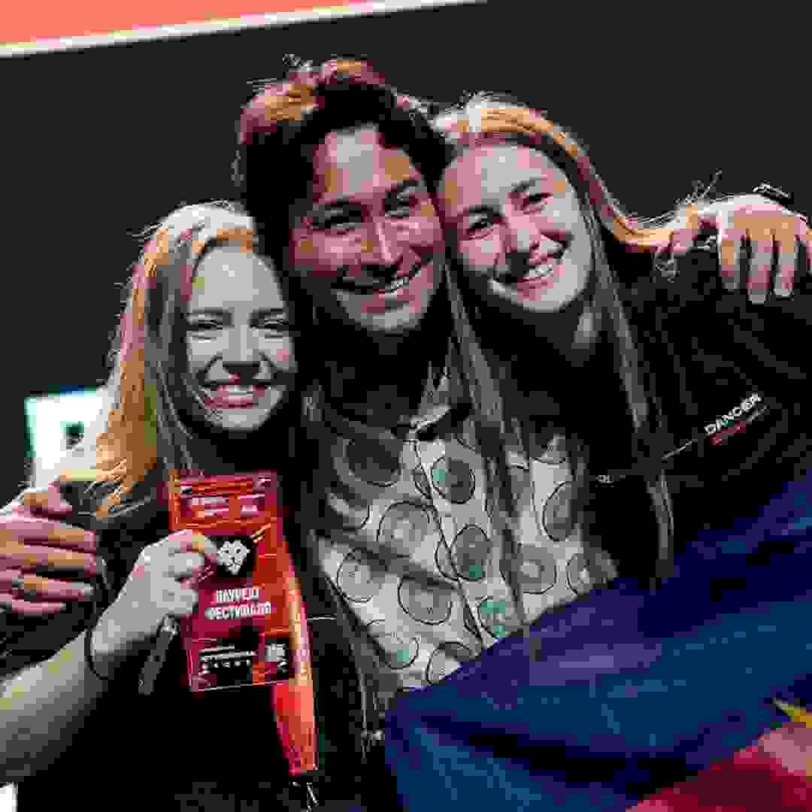
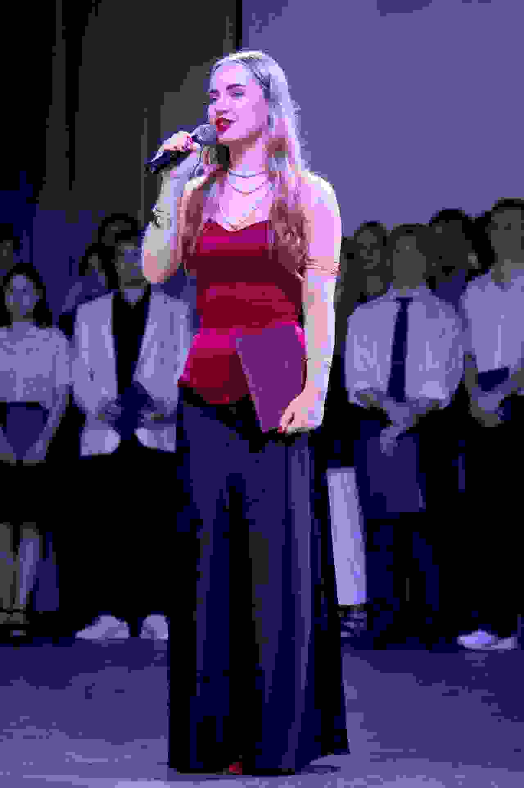

Мой путь: наука, творчество и лидерство
Я считаю, что настоящий специалист должен быть разносторонне развит. За время обучения в вузе я не только углубилась в научную работу, но и проявила себя в творчестве и общественной жизни. В этом разделе я хочу рассказать о своем опыте, который сформировал меня как личность и профессионала.
1. Опыт профессиональной деятельности
Свою профессиональную карьеру я начала еще во время обучения в бакалавриате. Я работала аналитиком 1С. В мои обязанности входило не только написание кода на языке 1С, но и настройка, установка сервисов, а также анализ бизнес-процессов. Этот опыт научил меня ответственности, умению работать с большими объемами данных и находить общий язык с заказчиками. Именно тогда я поняла, что информационные технологии — это не просто код, а инструмент для решения реальных задач бизнеса.
2. Творческие достижения и спорт
Параллельно с учебой я активно участвовала в творческих конкурсах. Я являюсь победителем фестивалей «Студенческая весна на Кубани» и «Российская студенческая весна» в танцевальном направлении. Танцы научили меня дисциплине, умению работать в команде и достигать поставленных целей. Каждое выступление — это результат долгих репетиций, преодоления себя и командной работы. Этот опыт я успешно переношу и в проектную деятельность.
3. Участие в значимых мероприятиях
За время обучения я приняла участие в нескольких крупных мероприятиях. Наиболее значимые из них — это Всероссийская научно-практическая конференция молодых ученых (Краснодар, КубГУ), где я представляла свои исследования, а также конкурс «ИИ в курсовых и дипломных работах 2026», где моя магистерская работа была высоко оценена. Эти мероприятия позволили мне не только получить обратную связь от экспертов, но и обменяться опытом с коллегами из других вузов.
4. Опыт участия в Интернет-проектах
В рамках учебной и научной деятельности я активно участвую в создании Интернет-проектов. Одним из таких проектов является Электронный учебно-методический комплекс (ЭУМК) по сольфеджио, который вы можете найти на главной странице персонального сайта. Этот проект включает в себя 28 уроков, тесты и интерактивные элементы, и я разрабатывала его полностью с нуля — от идеи до реализации на HTML и CSS. Также я занимаюсь разработкой собственного персонального сайта, который вы сейчас просматриваете.
5. Тематический сайт о школе
В качестве дополнительного творческого проекта я планирую создать тематический сайт, посвященный моей родной школе. Я хочу рассказать о ее истории, выдающихся выпускниках и учителях, которые сыграли важную роль в моем становлении. Этот проект позволит мне сохранить память о школьных годах и поделиться опытом с будущими поколениями учеников.
6. Академические успехи
Я являюсь обладателем множества стипендий и грантов: «Умная стипендия» (2024, 2025), «Альфа-шанс» (2025), стипендия Правительства РФ (2025), а также специальная молодежная стипендия Краснодарского края и главы. Это подтверждает мой высокий уровень мотивации и способностей, а также стремление к постоянному развитию.
Фотогалерея

Награждение на фестивале «Студенческая весна»

Вручение диплома об окончании бакалавриата